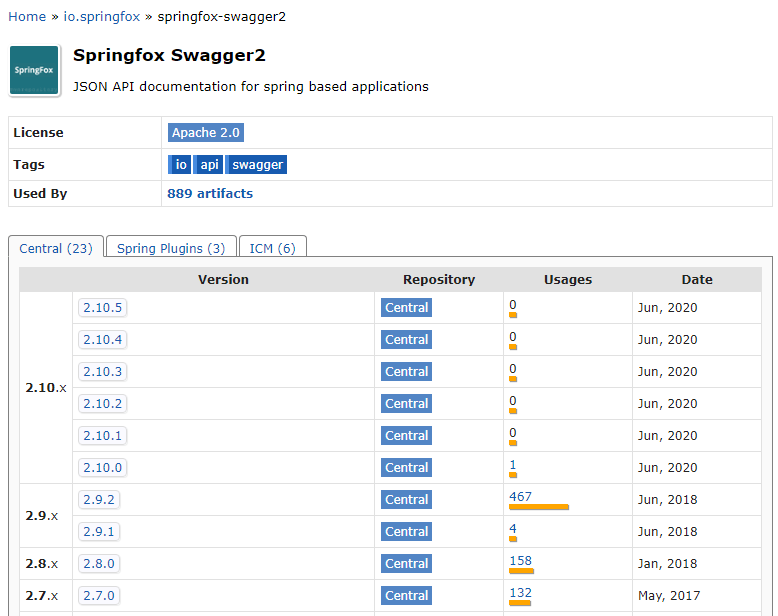
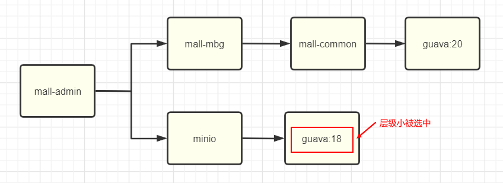
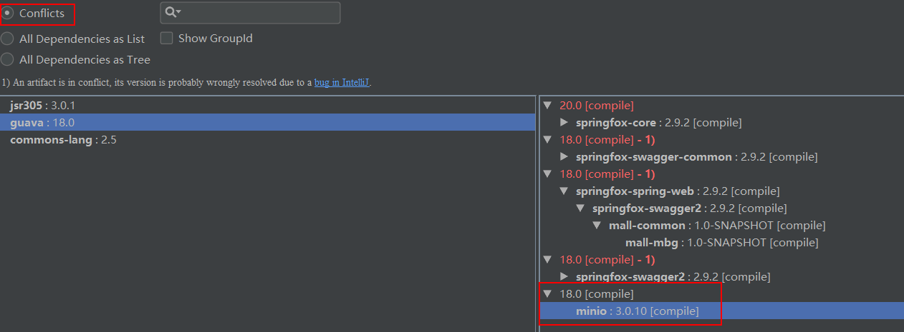
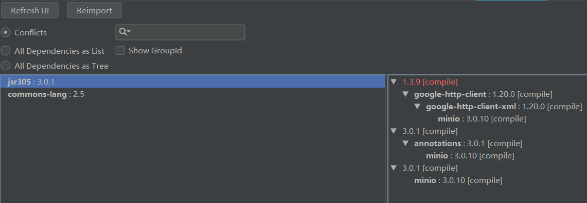
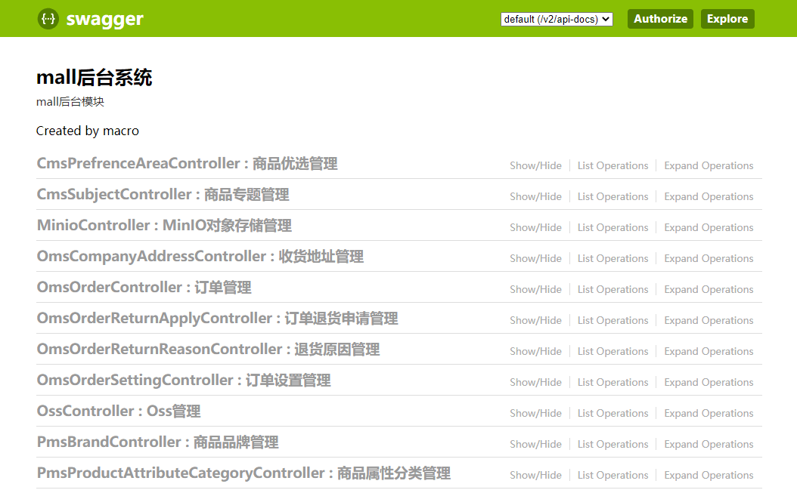
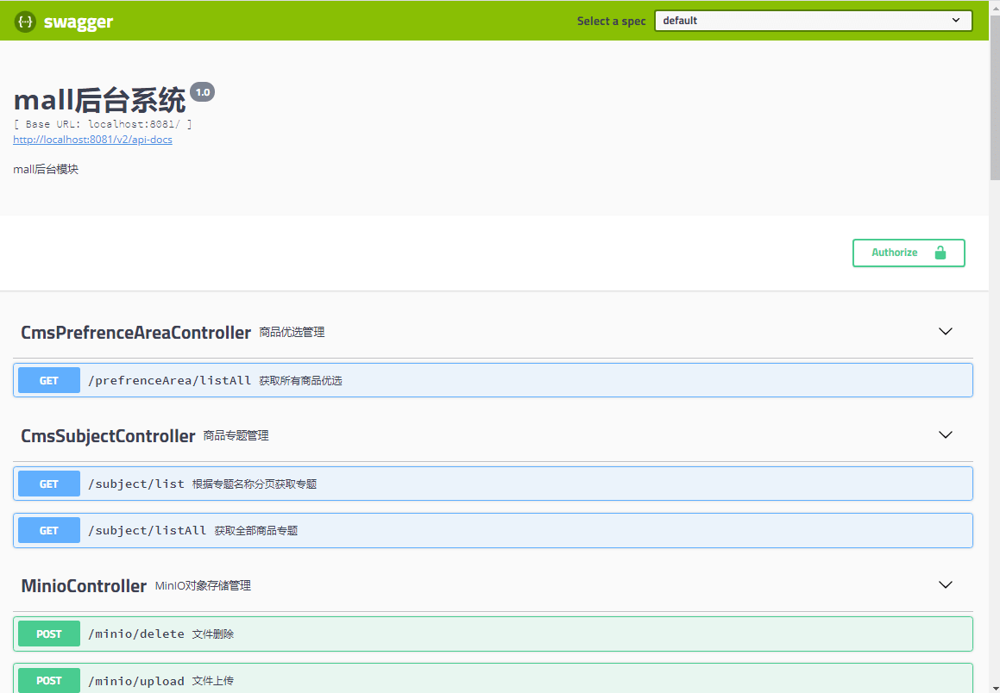

学习不走弯路，关注公众号 回复「学习路线」，获取mall项目专属学习路线！
给Swagger升级了新版本，没想到居然有这么多坑！
看着
mall项目中古老的Swagger API文档样式，这次我终于下定决心要给它升个级了。升级过程中遇到了好多坑，不过只要用好Maven，这些都不是个事！
选择升级版本
首先我们选择下需要升级的版本，直接去Maven仓库看下，哪个版本使用的比较多。虽然有最新版本2.10.x，但是几乎没什么人用，而上一个版本2.9.x使用的人却很多，看样子还是2.9.x版本比较稳定，我们选择升级到2.9.2版本。

升级Swagger
接下来我们就可以开始升级Swagger版本了，原来项目里用的是
2.7.0版本。
- 由于
mall项目使用父项目来统一管理依赖，所以只要修改父项目中的Swagger依赖版本即可，父项目的pom.xml在项目根目录下；
<properties>
<swagger2.version>2.9.2</swagger2.version>
</properties>
- 运行
mall-admin项目发现无法启动，报错信息如下，有个依赖里面的某个方法找不到了，一看是guava里面的，估计是版本的问题；
***************************
APPLICATION FAILED TO START
***************************
Description:
An attempt was made to call a method that does not exist. The attempt was made from the following location:
springfox.documentation.schema.DefaultModelDependencyProvider.dependentModels(DefaultModelDependencyProvider.java:79)
The following method did not exist:
com.google.common.collect.FluentIterable.concat(Ljava/lang/Iterable;Ljava/lang/Iterable;)Lcom/google/common/collect/FluentIterable;
The method's class, com.google.common.collect.FluentIterable, is available from the following locations:
jar:file:/C:/Users/macrozheng/.m2/repository/com/google/guava/guava/18.0/guava-18.0.jar!/com/google/common/collect/FluentIterable.class
It was loaded from the following location:
file:/C:/Users/macrozheng/.m2/repository/com/google/guava/guava/18.0/guava-18.0.jar
Action:
Correct the classpath of your application so that it contains a single, compatible version of com.google.common.collect.FluentIterable
Process finished with exit code 1
- 当有好几个依赖都使用了不同版本的
guava包时，Maven是如何选择的呢？Maven是按照就近原则选择的，层级越是浅的依赖越会被选择；

- 此时推荐使用
Maven Helper这款IDEA插件，直接查看mall-admin项目是否存在依赖冲突，guava版本果然冲突了；

- 通过观察可以发现
minio这个依赖层级最浅，所以使用的是它的guava版本，直接排除掉即可；
<dependency>
<groupId>io.minio</groupId>
<artifactId>minio</artifactId>
<exclusions>
<exclusion>
<artifactId>guava</artifactId>
<groupId>com.google.guava</groupId>
</exclusion>
</exclusions>
</dependency>
- 排除完成后发现guava的依赖冲突已经不见了，再次运行
mall-admin项目，发现已经可以正常运行了；

- 当我们访问Swagger文档时，又发现了一个问题，会报NumberFormatException异常；
java.lang.NumberFormatException: For input string: ""
at java.lang.NumberFormatException.forInputString(NumberFormatException.java:65)
at java.lang.Long.parseLong(Long.java:601)
at java.lang.Long.valueOf(Long.java:803)
at io.swagger.models.parameters.AbstractSerializableParameter.getExample(AbstractSerializableParameter.java:412)
- 原因是当我们使用@ApiModelProperty注解时，作为Long数据类型，如果你不添加
example属性，默认值是空字符串，空字符串转型自然就会报NumberFormatException异常；
/**
* 修改订单费用信息参数
* Created by macro on 2018/10/29.
*/
@Getter
@Setter
public class OmsMoneyInfoParam {
@ApiModelProperty(value = "订单ID",example = "1")
private Long orderId;
}
- 我们已经使用了很多@ApiModelProperty注解，要一个个添加那是不可能的，不过使用新版本的
swagger-annotations和swagger-models依赖包就可以解决了，于是我们的Swagger依赖变成了下面这样的；
<dependencies>
<dependency>
<groupId>io.springfox</groupId>
<artifactId>springfox-swagger2</artifactId>
<exclusions>
<exclusion>
<groupId>io.swagger</groupId>
<artifactId>swagger-annotations</artifactId>
</exclusion>
<exclusion>
<groupId>io.swagger</groupId>
<artifactId>swagger-models</artifactId>
</exclusion>
</exclusions>
</dependency>
<dependency>
<groupId>io.springfox</groupId>
<artifactId>springfox-swagger-ui</artifactId>
</dependency>
<!--解决Swagger 2.9.2版本NumberFormatException-->
<dependency>
<groupId>io.swagger</groupId>
<artifactId>swagger-models</artifactId>
<version>1.6.0</version>
</dependency>
<dependency>
<groupId>io.swagger</groupId>
<artifactId>swagger-annotations</artifactId>
<version>1.6.0</version>
</dependency>
</dependencies>
再次运行
mall-admin发现该问题已经解决了，我们在maven中一发现不合适的依赖就排除掉，然后引入合适版本的依赖，这样做真的好么？其实我们可以利用Maven项目的继承特性，直接在父项目中规定好依赖的版本，这样子项目的依赖版本就能统一了；
先把原来
pom.xml中排除guava和swagger的配置给去除了，然后修改根目录下的pom.xml文件，指定版本号；
<properties>
<swagger2.version>2.9.2</swagger2.version>
<swagger-models.version>1.6.0</swagger-models.version>
<swagger-annotations.version>1.6.0</swagger-annotations.version>
<guava.version>20.0</guava.version>
</properties>
- 在父项目的依赖管理节点下添加需要统一管理的相关依赖，至此Swagger版本升级完成；
<dependencyManagement>
<dependencies>
<!--Swagger-UI API文档生产工具-->
<dependency>
<groupId>io.springfox</groupId>
<artifactId>springfox-swagger2</artifactId>
<version>${swagger2.version}</version>
</dependency>
<dependency>
<groupId>io.springfox</groupId>
<artifactId>springfox-swagger-ui</artifactId>
<version>${swagger2.version}</version>
</dependency>
<!--解决Swagger 2.9.2版本NumberFormatException-->
<dependency>
<groupId>io.swagger</groupId>
<artifactId>swagger-models</artifactId>
<version>${swagger-models.version}</version>
</dependency>
<dependency>
<groupId>io.swagger</groupId>
<artifactId>swagger-annotations</artifactId>
<version>${swagger-annotations.version}</version>
</dependency>
<!--统一Guava版本防止冲突-->
<dependency>
<groupId>com.google.guava</groupId>
<artifactId>guava</artifactId>
<version>${guava.version}</version>
</dependency>
</dependencies>
</dependencyManagement>
- 当我们配置好Token访问需要权限的接口时，会发现品牌、商品、商品分类下的接口有权限访问，其他提示无权限，那是因为我们使用了如下配置来配置需要登录认证的路径；
@Configuration
@EnableSwagger2
public class Swagger2Config {
private List<SecurityContext> securityContexts() {
//设置需要登录认证的路径
List<SecurityContext> result = new ArrayList<>();
result.add(getContextByPath("/brand/.*"));
result.add(getContextByPath("/product/.*"));
result.add(getContextByPath("/productCategory/.*"));
return result;
}
}
- 修改为全部路径即可，这个和旧版有点不同，旧版访问所有接口都会在头信息中带Token，而新版只会对配置的路径带Token。
@Configuration
@EnableSwagger2
public class Swagger2Config {
private List<SecurityContext> securityContexts() {
//设置需要登录认证的路径
List<SecurityContext> result = new ArrayList<>();
result.add(getContextByPath("/*/.*"));
return result;
}
}
新老版本界面对比
Swagger升级到2.9.2版本后界面瞬间变得美观了，让我们对新老界面来个对比。
老版本

新版本

项目源码地址
https://github.com/macrozheng/mall
公众号